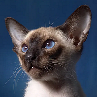

Imposible hablar de los gatos siameses sin recordar aquellos ojos en bellísimas tonalidades de verde y azul, que combinan perfectamente con sus elegantes rasgos, ¿verdad?.
Los siameses son tan especiales que sus tutores afirman que maúllan de una forma única, como si conversaran con sus humanos favoritos. Son muchos los posibles motivos que explican el éxito de los siameses como animales de compañía, pero seguramente su carácter merece mayor destaque.
Son gatos muy cariñosos y leales, capaces de trasmitir un enorme afecto a los miembros de su familia. Además, el pelaje corto también resulta un atractivo de esta raza, ya que requiere cuidados simples para su mantenerse limpios, bellos y saludables.
Los gatos siameses proceden del antiguo reino de Siam (la actual Tailandia), lugar de donde se dice que dicha raza felina solo podía poseerla la realeza. Afortunadamente en la actualidad cualquier amante de los gatos puede disfrutar de esta excelente y bella mascota.
De hecho solo existen dos tipos de gato siamés: el gato siamés moderno y el llamado thai, el tipo antiguo de donde proceden los siameses actuales. Este último tenía como característica principal que solía ser de color blanco (color sagrado en Siam) y tener la cara levemente más redondeada. También su cuerpo es ligeramente más compacto y redondeado.
Las investigaciones de esta ciencia están basadas en las ciencias naturales como la biología, la química y la física, aunque también en ciencias sociales, como la sociología médica, la psicología y otras.

FIN